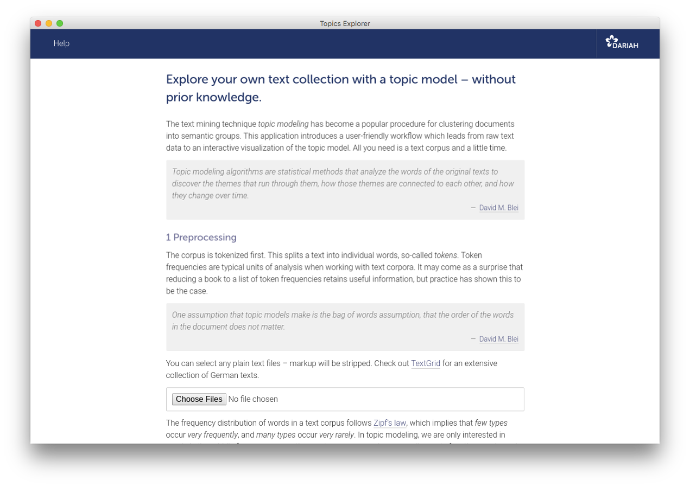

Explore your own text collection with a topic model – without prior knowledge.
The text mining technique topic modeling has become a popular procedure for clustering documents into semantic groups. This application introduces a user-friendly workflow which leads from raw text data to an interactive visualization of the topic model. All you need is a text corpus and a little time.
Topic modeling algorithms are statistical methods that analyze the words of the original texts to discover the themes that run through them, how those themes are connected to each other, and how they change over time.
Overview
- Getting started
- The application
- The sample corpus
- Example visualizations
- Troubleshooting
- Developing
- What is topic modeling?
- What is DARIAH-DE?
- License
Getting started
Windows, macOS and Linux users do not have to install additional software. The application itself is portable.
- Go to the release-section and download the archive for your OS.
- Extract the content of the archive.
- Run the app by double-clicking the file DARIAH Topics Explorer.
You can also use the most recent source code (if you are not on Windows):
- Go to the release-section and download the source code as ZIP archive.
- Unzip the archive, e.g. using
unzipvia the command-line. - Make sure you have
Pipenv installed (if not: use
pip install --user pipenv). - Run
pipenv installwithin the extracted archive, and afterwardspipenv shell. - To start the application, type
python topicsexplorer.py, and press enter.
Note
If you want to use the sample corpus, you must clone the repository with Git (not download the source code from the release-section). See also section The sample corpus on GitHub. If you download one of the archives (except the source code) from the release section, the corpus is included.
The application
This application is designed to introduce topic modeling particularly gently (e.g. for educational purpose). If you have a very large text corpus, you may wish to use more powerful tools like MALLET, which is written in Java and can be completely controlled from the command-line. The topic modeling algorithm used in this application, latent Dirichlet allocation, was implemented by Allen B. Riddell using collapsed Gibbs sampling as described in Pritchard et al. (2000).
You might want to check out some Jupyter notebooks for topic modeling in Python – experimenting with an example corpus on Binder does not require any software on your local machine.
The sample corpus
We provide a small sample corpus with which the application can be tested quickly and easily:
| Key 1 | Key 2 | Key 3 | Key 4 | Key 5 | |
|---|---|---|---|---|---|
| Topic 1 | captain | lord | whom | over | young |
| Topic 2 | phineas | laura | lord | finn | kennedy |
| Topic 3 | jarndyce | quite | sir | richard | ada |
| Topic 4 | jones | indeed | adams | answered | may |
| Topic 5 | our | these | can | honour | without |
| Topic 6 | lopez | duke | wharton | course | duchess |
| Topic 7 | crawley | george | osborne | rebecca | amelia |
| Topic 8 | peggotty | aunt | mother | steerforth | murdstone |
| Topic 9 | thought | way | too | down | went |
| Topic 10 | tom | adam | maggie | work | tulliver |
Example visualizations
The following visualizations display the topic model output of 10 novels (written by Charles Dickens, George Eliot, Joseph Fielding, William Thackeray and Anthony Trollope).
Topics Explorer’s visualizations are interactive. You will be able to navigate through topics and documents, get similar topics and documents displayed, read excerpts from the original texts, and inspect the document-topic distributions in a heatmap.
Topics are probability distributions over the whole vocabulary of a text corpus. One value is assigned to each word, which indicates how relevant the word is to that topic (to be exact, how likely one word is to be found in a topic). After sorting those values in descending order, the first n words represent a topic.
Below the topics are ranked by their numerical dominance in the sample corpus; each bar displays a topic’s dominance score.
HIER DIE BALKEN
Each document consists to a certain extent of each topic, which is one of the theoretical assumptions of topic models. Although some values are too small to be visualized here (and have therefore been rounded to zero), they are actually greater than zero.
Visualizing the document-topic proportions in a heatmap displays the kind of information that is probably most useful. Going beyond pure exploration, it can be used to show thematic developments over a set of texts, akin to a dynamic topic model.
HIER DIE HEATMAP
Troubleshooting
- If you are confronted with any problems regarding the application, use GitHub issues – but suggestions for improvements, wishes, or hints on typos are of course also welcome.
- Please be patient. Depending on corpus size and number of iterations, the process may take some time, meaning something between some seconds and some hours.
- If the program displays an error message at startup, make sure that you have unpacked the archive.
- If you are on a Mac and get an error message saying that the file is from an “unidentified developer”, you can override it by holding control while double-clicking. The error message will still appear, but you will be given an option to run the file anyway.
- You might get a similar error message as the one above on Windows systems: “Windows Defender SmartScreen prevented an unrecognized app from starting”. If this is the case, please select “More Info” and then “Run anyway”.
- On a
Windows machine, if you are not able to start the program, if nothing happens
for a long time,
or if you
get an error message, go to the
srcfolder, search for the filewebapp.exeand click on it. - For more technical troubleshooting, have a look at the README on GitHub.
Developing
If you are interested in the more technical parts, using the development version in general, or even want to contribute, please check out the GitHub page.
What is topic modeling?
- David M. Blei, Probabilisitic Topic Models, in: Communications of the ACM 55 (2012).
- Megan R. Brett, Topic Modeling, A Basic Introduction, in: Journal of Digital Humanities 2 (2012).
- Matthew Jockers and David Mimno, Significant Themes in 19th-Century Literature, in: Poetics 41 (2013).
- Steffen Pielström, Severin Simmler, Thorsten Vitt and Fotis Jannidis, A Graphical User Interface for LDA Topic Modeling, in: Proceedings of the 28th Digital Humanities Conference (2018).
What is DARIAH-DE?
DARIAH-DE supports research in the humanities and cultural sciences with digital methods and procedures. The research infrastructure of DARIAH-DE consists of four pillars: teaching, research, research data and technical components. As a partner in DARIAH-EU, DARIAH-DE helps to bundle and network state-of-the-art activities of the digital humanities. Scientists use DARIAH, for example, to make research data available across Europe. The exchange of knowledge and expertise is thus promoted across disciplines and the possibility of discovering new scientific discourses is encouraged.
This application is developed with support from the DARIAH-DE initiative, the German branch of DARIAH-EU, the European Digital Research Infrastructure for the Arts and Humanities consortium. Funding has been provided by the German Federal Ministry for Research and Education (BMBF) under the identifier 01UG1610A to J.
License
This application is licensed under Apache 2.0. You can do what you like with the source code, as long as you include the original copyright, the full text of the Apache 2.0 license, and state significant changes. You cannot charge DARIAH-DE for damages, or use any of its trademarks like name or logos.